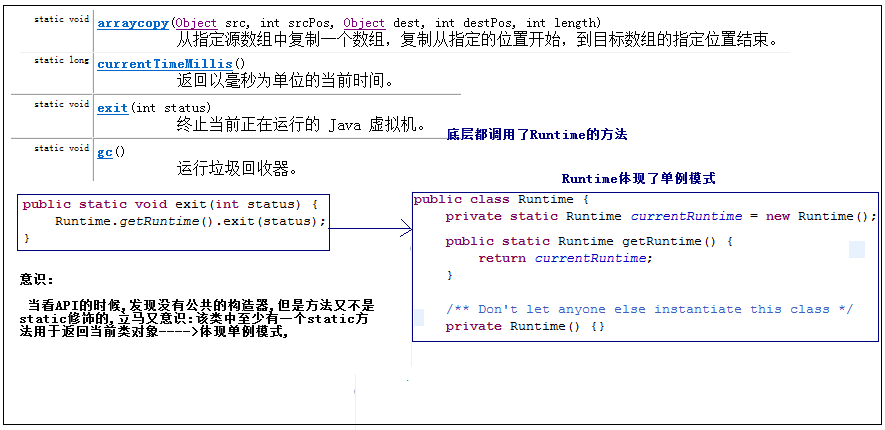

为什么得有编码规范:
为什么要有编码规范(Why Have Code Conventions)
编码规范对于程序员而言尤为重要，有以下几个原因：
- 一个软件的生命周期中，80%的花费在于维护 (改bug/增加新的功能).
- 几乎没有任何一个软件，在其整个生命周期中，均由最初的开发人员来维护
- 编码规范可以改善软件的可读性，可以让程序员尽快而彻底地理解新的代码
- 如果你将源码作为产品发布，就需要确任它是否被很好的打包并且清晰无误，一如你已构建的其它任何产品
为了执行规范，每个软件开发人员必须一致遵守编码规范。每个人。
注重的编码规范(简单):
---------------------------------------------------------------------------
起名:
1):都得遵循标识符的规范.
2):不能使用拼音,拼音首字母,使用英文单词,或者使用英文组合单词.
3):采用驼峰表示法,使用组合单词的使用,以后的每一个单词首字母都大写.
EmployeeAdvanceSetting.
---------------------------------------------------------------------------
1:包名:
package 域名倒写.模块名.组件;
package com._520it.pss.util;
package com.m520it.pss.util;
全部使用小写字母,作为Java文件得第一行代码.
2:类名:
使用名词,表示一类事物,首字母大写.
如果我们在项目中尽量不要使用JDK内置的类名,比如String ,System类.
讲解知识点: XxxDemo,XxxTest,(Xxx表示知识点的意思),比如:StringDemo.java.
3:接口名:
使用形容词/副词/名词,首字母大写.
在有的企业,习惯以I作为接口的前缀名. IEmployeeDAO/IEmployeeService.
4:方法名:
使用动词,首字母小写,save/deleteEmployee.
5:变量:
使用名词,首字母小写,如name/age,.
6:常量:
使用final修饰的变量.
全部使用大写字母组成,如果使用多个单词组合使用下划线分割,如:Integer类:MAX_VALUE:
在方法中定义的final变量,一般不使用大写.

和数学相关的三个常用类:
1):Math:Math 类包含用于执行基本数学运算的方法，如初等指数、对数、平方根和三角函数等,都是静态方法,使用不多.
2):BigDecimal:float和double都不能表示精确的小数,此时使用BigDecimal,用于处理金钱和精度要求高的数据.
3):BigInteger:表示大整型,如果两个long类型的最大值相运算,结果long再也存储不下,此时使用BigInteger,一般不用.
加,减,乘,除的方法和BigDecimal相同.